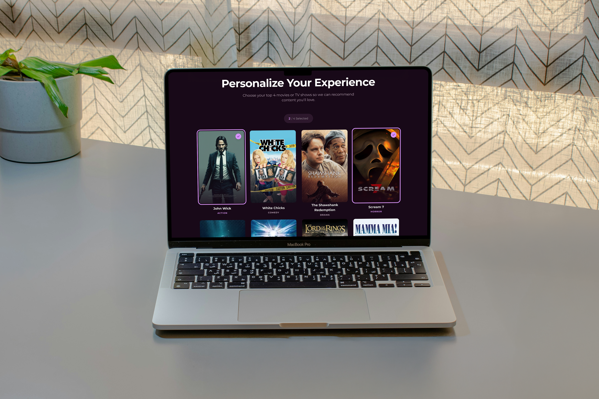
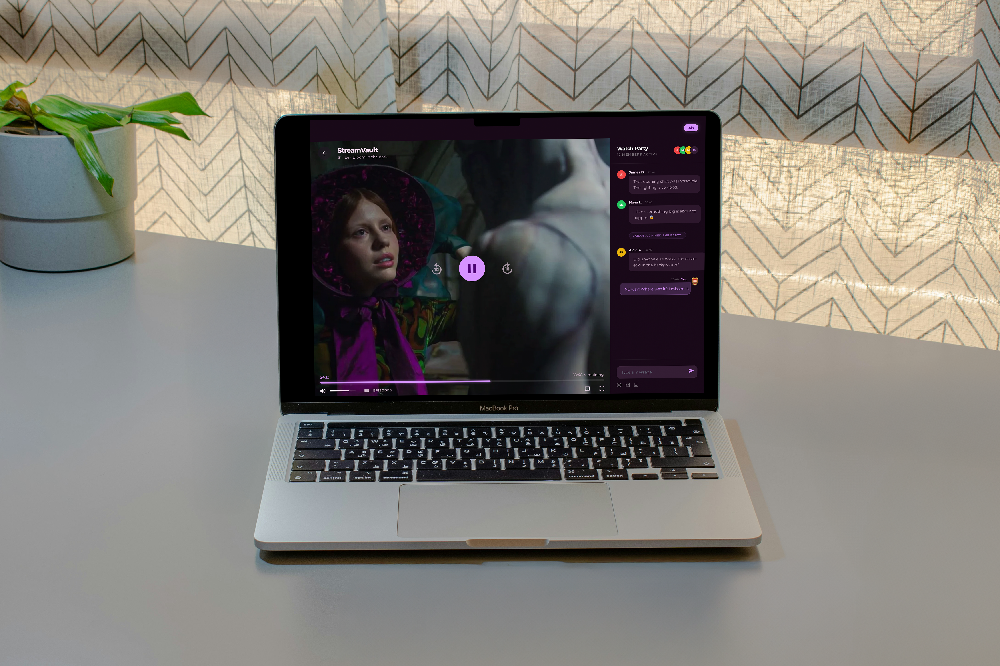

01 — Overview
Making the airport experience more youthful and independent
Travelers face significant stress navigating Boston Logan Airport, particularly the "curb-to-gate" journey. For elderly travelers, this experience is often marred by expansive terminals, confusing signage, and physical exhaustion.
Our team, WiseWanderers, set out to transform this journey into a smooth, welcoming, and exciting experience that proves adventure has no age limit.
02 — Findings
Understanding the barriers to travel
Through interviews and empathy mapping, we identified critical friction points for elderly users:
"She looked up at the gate, then back at her ticket—still unsure."
Needs Statements
Cognitive Load: Dyslexia and noise interference make reading gate numbers and announcements difficult.
Physical Strain: Long TSA lines and vast distances between gates cause lightheadedness and pain.
Language Barriers: Limited English proficiency creates a fear of getting lost or misunderstood.
Tech Adoption: A preference for simple, high-contrast, and large-text interfaces.
03 — Methodology
Research-driven from sketch to prototype
The study used a multi-method qualitative approach combining interviews, affinity diagramming, and journey mapping across four research phases — with four participants providing rich, observational data.
Affinity Diagrams
Pain points from user interviews were collected and grouped thematically using FigJam, surfacing patterns in frustration, desire, and behavior across all participants.
Journey Mapping
Emotional journeys were mapped across five stages: Awareness → Consideration → Decision → Service → Loyalty. Each user's satisfaction at every stage was charted and compared.
Competitive Analysis
Netflix, Amazon Prime Video, and Disney+ were benchmarked across color, layout, font, buttons, illustration style, and dark mode — identifying gaps and opportunities for StreamVault.
Paper Prototyping & Testing
Low-fidelity sketches were tested with users to validate the top-4 genre selection flow, the simplified home screen layout, and the watch party invitation pattern.


04 — Recommendations
Four targeted design decisions with the biggest impact
Based on usability testing, professor Jack and the HBO Max design audit (cited as visual inspiration for its elegant use of gradient and top navigation), four prioritized recommendations were developed and refined in the prototype.
- Move navigation to the top — The left-rail icon menu was consistently missed by users. Placing the nav horizontally at the top — as seen in HBO Max — dramatically improves discoverability and follows standard web reading patterns.
- Add clear in-screen instructions — Pages like the top-4 genre selector need contextual prompts so users understand what to do without trial and error. Instruction copy reduces confusion especially for users with cognitive impairments.
- Implement watch party with QR/link sharing — 70% of users wanted to watch with friends. The watch party feature — invite via QR code or link, synchronized playback, real-time chat — directly addresses the top social feature request from the study.
- Use subtle gradient and add a footer — Drawing from the HBO Max visual reference, light gradients add cinematic depth without overwhelming the interface. A footer was added to all screens to anchor the layout and reduce user disorientation.
05 — Final Design
A complete user flow — from landing page to watch party
The final high-fidelity prototype in Figma covers the full experience: a compelling landing page, streamlined sign-in with OTP verification, a personalization onboarding flow, multi-profile setup, a clean home screen, content detail pages, and a full watch party experience with real-time chat.
- Landing Page — Hero value prop, plan selection, and feature highlights
- Sign In — Email or mobile entry with OTP verification
- Top 4 Selection — Pick top genres to personalize recommendations immediately
- Profile Setup — "Who's Watching?" — manage profiles for the whole family
- Home Screen — 3 focused categories, minimal scroll, hero feature content
- Content Details — Episodes, ratings, similar titles, and share options
- Share Stream — QR code or link to invite friends instantly
- Watch Party — Synchronized playback with real-time group chat
View the full interactive prototype on Figma: StreamVault Prototype →
05 — Reflections
What I learned
- Designing for accessibility isn't a constraint — it's the brief. With 51% ADHD and 61% cognitive impairments in the study group, accessible design became the primary design direction, not an afterthought.
- Three categories on a home screen is a bold choice. Limiting the home screen to 3 content rows felt risky, but testing showed users felt less overwhelmed and more in control — simplicity earned trust.
- Onboarding is an opportunity, not a gate. The top-4 genre picker transforms sign-up friction into a personalization moment — users leave the flow with a platform that already feels curated for them.
- Social watching is a genuine unmet need. 70% of users wanting to share content wasn't just a nice-to-have — it revealed that streaming is a fundamentally social activity that current interfaces treat as solitary.
- Competitive audits are most useful when specific. Comparing Netflix, Prime, and Disney+ feature-by-feature (not just impressionistically) surfaced exact gaps — like the absence of dark mode or confusing icon-only navs.